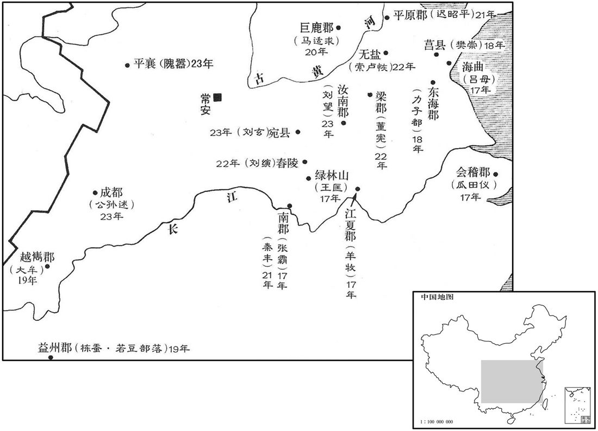

公元17年资治通鉴：本年记事、原文与白话对照
按原书编年位置阅读；追叙和史论不等于本年发生的事件。白话采用所据译本，缺译不以生成译文补齐。
卷38 · 本年记事
公元17年 · 汉孝平皇帝天凤四年
四年〔（丁丑、一七）〕
上传原文的注释括号有异常，字符原样保留；无法可靠划分的段落默认全文显示。

本年形势与背景参考图
夏，六月，莽更授诸侯王〔【章：十二行本无「王」字；乙十一行本同。】〕茅土于明堂；亲设文石之平，陈菁茅四色之土，〔师古曰：尚书禹贡，包匦菁茅，儒者以为菁，菜名也；茅，三脊茅也。而莽此言以菁茅为一物，则是谓善茅为菁茅也。土有五色，而此云四者，中央之土不以封也。春秋大传曰：天子之国有泰社，东方青，南方赤，西方白，北方黑，上方黄。故将封于东方者取青土，封于南者取赤土，封于西者取白土，封于北者取黑土，各取其方土，裹以白茅，封以为社，此始受封于天子者也。此之谓主土；主土者，立社以奉之也。菁，音精。〕告于岱宗、泰社、后土、先祖、先妣以班授之。莽好空言，〔好，呼到翻。〕慕古法，多封爵人；性实吝啬，托以地理未定，故且先赋茅土，用慰喜封者。
夏季六月间，王莽重新在明堂把象征封国的茅草与泥土授予诸侯王，亲自设置有文采的石制几案，陈列菁茅和四色泥土，祭告泰山、国家宗社、后土和先代的祖父祖母，然后进行封授。王莽喜好说空话，羡慕古代的制度，多给人赐封爵位，为人却实在吝啬小气，托辞土地规划没有确定，所以权且先授予象征封国的茅土，用来安慰喜欢封爵的人。
秋，八月，莽亲之南郊，铸作威斗，以五石铜为之，〔李奇曰：以五色药石及铜为之。苏林曰：以五色铜骐治之。师古曰：李说是也，若今作骒石之为。〕若北斗，长二尺五寸，〔长，直亮翻。〕欲以厌胜众兵。〔师古曰：厌，音一叶翻。〕既成，令司命负之，莽出在前，入在御旁。
秋季八月，王莽亲自到京师南郊，铸作威斗。威斗是用铜掺进五色石子铸成的，形状象北斗，长二尺五寸，想要以此来诅咒战胜各地兵马。威斗铸成了，让司命扛着它，王莽外出置于前头，王莽进宫就放在旁边。
莽置羲和命士，以督五均、六筦。〔盐，一也。酒，二也。铁，三也。名山、大泽四也。五均、赊贷，五也。铁布、铜冶，六也。〕郡有数人，皆用富贾为之，〔贾，音古。〕乘传求利，〔传，知恋翻。〕交错天下；因与郡县通奸，多张空簿，〔师古曰：簿，计簿也，音步户翻。〕府藏不实，〔藏，徂浪翻。〕百姓愈病。是岁，莽复下诏申明六筦，〔下，遐稼翻。〕每一筦为设科条防禁，〔为，于伪翻。〕犯者罪至死。奸民猾吏并侵，众庶各不安生，又一切调上公以下诸有奴婢者，〔调，徒钓翻。〕率一口出〔【章：十二行本「出」下有「钱」字；乙十一行本同；孔本同。】〕三千六百，天下愈愁。纳言冯常以六筦谏，莽大怒，免常官。法令烦苛，民摇手触禁，不得耕桑，繇役烦剧，〔师古曰：繇，读曰傜。〕而枯旱、蝗虫相因，狱讼不决。吏用苛暴立威，旁缘莽禁，〔师古曰：旁，依也，音步浪翻。〕侵刻小民，富者不能〔【章：十二行本无「能」字；乙十一行本同；孔本同；张校同。】〕自别，〔【章：十二行本「别」作「保」；乙十一行本同；孔本同；张校同。】〕别，彼列翻。〕贫者无以自存，于是并起为盗贼，依阻山泽，吏不能禽而覆蔽之，浸淫日广。〔覆，敷救翻。师古曰：浸淫，犹渐染也。余谓此以水为谕，渐浸而至于淫溢也。〕临淮瓜田仪〔【章：十二行本「仪」下有「等」字；乙十一行本同；孔本同；张校同。】〕依阻会稽长州；〔服虔曰：姓瓜田，名仪。师古曰：长州，即枚乘所云长州之宛。余谓今苏州长洲�之Y其地。会，工外翻。〕琅邪吕母聚党数千人，杀海曲宰，入海中为盗，穷〔莽改县令长曰宰。初，吕母子为县吏，为宰所冤杀；母散家财，以酤酒买弓弩，阴厚贫少年，得百余人，遂攻海曲县，杀其宰以祭子墓。地理志，海曲县属琅邪郡。贤曰：故城在密州莒县东。〕其众浸多，至万数。荆州饥馑，民众入野泽，掘凫茈而食之，〔荆州部南阳、南郡、桂阳、武陵、零陵、江夏等郡。尔雅曰：芍，凫茈。郭璞曰：生下田中，苗似龙须而细，根如指；根黑色，可食。茈，音才支翻。芍，音胡了翻。〕更相侵夺。〔更，工衡翻。〕新市人王匡、王凤为平理诤讼，〔地理志，新市县属江夏郡。为，于伪翻。诤，与争同。晋王沈释时论，阘茸勇敢于饕诤，謟韵平声。古字多假借用也。〕遂推为渠帅，众数百人。〔孔安国曰：渠，大也。帅，所类翻。〕于是诸亡命者南阳马武、颍川王常、成丹等，皆往从之；共攻离乡聚，臧于绿林山中，〔贤曰：离乡聚，谓诸乡聚离散。去城郭远者，大曰乡，小曰聚。前书曰：收合离乡，置大城中，即其义也。绿林山，在今荆州当阳县东北。余按郡国志，新市侯国有离乡聚、绿林山。则以离乡为聚名。聚，才喻翻。臧，古藏字。〕数月间至七八千人。又有南郡张霸、江夏羊牧等与王匡俱起，众皆万人。莽遣使者即赦盗贼，〔即，就也；就其相聚为盗处而赦之也。〕还言：「盗贼解辄复合。〔复，扶又翻。〕问其故，皆曰：『愁法禁烦苛，不得举手力作，所得不足以给贡税；闭门自守，又坐邻伍铸钱挟铜，奸吏因以愁民。』民穷，悉起为盗贼。」莽大奴，免之。其或顺指言「民骄黠当诛」〔黠，下八翻。〕及言「时运适然，且灭不久」，莽说，辄迁官。〔说，读曰悦。〕
王莽设置羲和命士，督促实行管理财政的五均、六管制度。每郡有几个名额，都由富豪、大商人担任。这些官员乘坐驿车，谋求奸利，往来全国。乘机与郡县官吏勾结，设立假帐。国库未能充实，而百姓更加穷苦。本年，王莽再下诏，重申肯定六管。每一项管理制度下达，总要为它设置条规禁令，违犯的人罪重的甚至处死。奸猾之徒与贪官污吏同时侵害百姓，百姓不得平安。此外，上公及以下有奴婢的人一律交税金，每一奴婢要缴纳三千六百钱，天下愈发愁苦。纳言冯常就六管制度进行规劝，王莽大怒，把冯常免职。新朝的法令，琐碎苛刻，百姓动辄触犯禁网，农民没有时间耕田种桑，徭役繁重。而旱灾、蝗虫灾接连发生，诉讼和监狱中在押的囚犯长久不能结案。官吏用残暴的手段建立威严，利用王莽的禁令侵占民间财产。富人不能保护自己的财产，穷人不能活命。于是，无论贫富都当起强盗。他们依靠高山大泽的险阻，官吏无法制服，只好蒙蔽上级，以致盗贼渐渐地越来越多。临淮瓜田仪盘据会稽郡长州，琅邪吕母聚集党羽几千人，诛杀海曲县宰，乘船入海，当起海盗，人数越来越多，有一万左右。荆州发生大饥馑，百姓逃入山野沼泽，挖掘荸荠而食，互相攻击争夺。新市人王匡、王凤出面为大家评理，排解纠纷，于是被推做首领，拥有数百人。这时亡命客南阳马武、颍川王常、成丹等，都来投奔。他们一同攻击距城市较远的村落，藏在绿林山中，数月之间，集结到七八千人。又有南郡张霸、江夏羊牧等，与王匡同时崛起，都有一万人之众。王莽派出使者，到当地赦免这些强盗。使者回京之后，奏称：“强盗们解散之后，不久就又聚合，问他们原因，都说：‘忧愁法令既多又苛刻，动辄犯法。努力劳动所得到的报酬，还不够缴纳捐税。就是闭门自守，又往往因邻居私自铸钱或携带铜，要连坐入狱，贪官污吏，逼人欲死。’百姓走投无路，便都起来做盗贼。”王莽大怒，免其官职。有人顺着王莽的意思，说：“小民猖狂刁猾，应该诛杀。”或者说：“这只是偶然的时运，不久将会消灭。”王莽高兴，便升其官职。